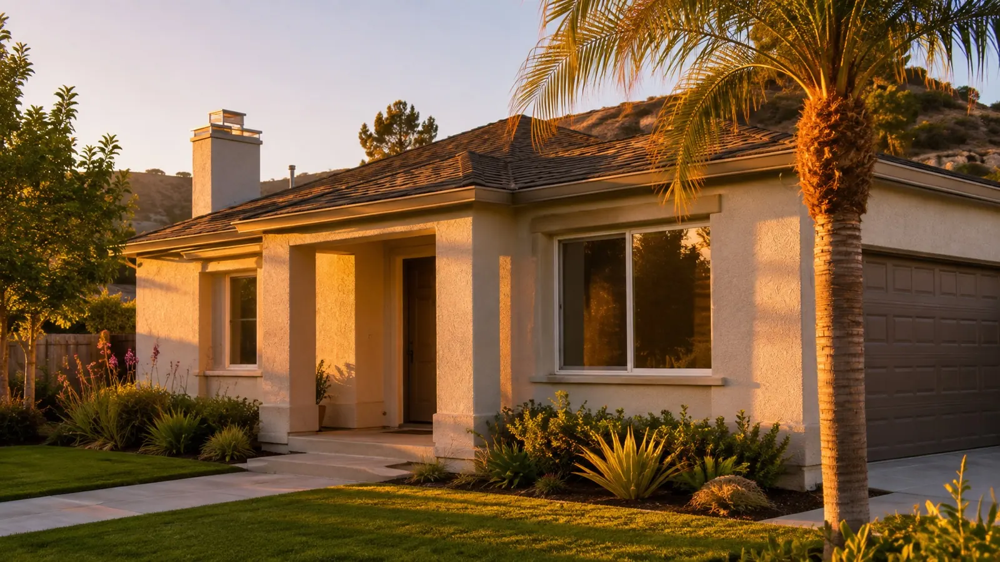
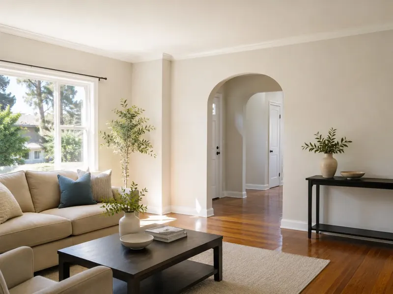
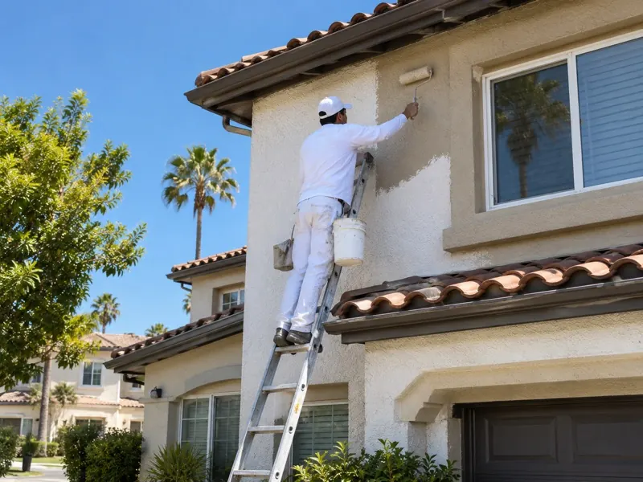
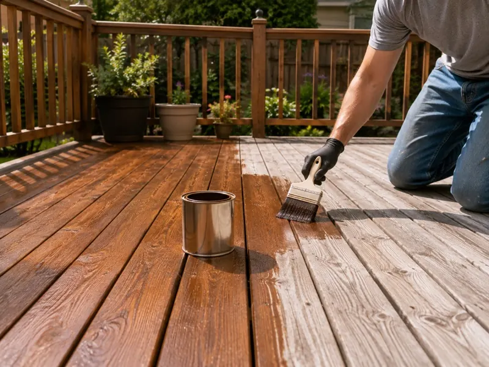
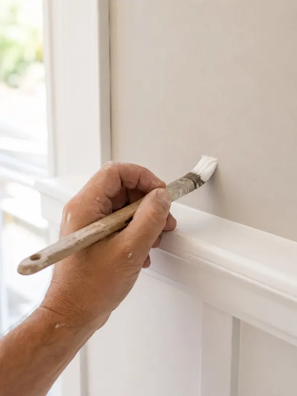

Burbank House Painters Co.
House painting for Burbank homeowners: interior and exterior repaints, plus deck and fence staining, with a written price before any work starts.
Call us today (857) 371-3693What it costs National averages run $2 to $6 per square foot inside and $1.50 to $4 outside (NerdWallet, 2026). Your written quote shows the real number for your home.
What we paint Interior rooms, trim and cabinets, exterior stucco and wood siding, and deck and fence staining.
Free estimate We walk your property and hand you a written price, usually within two days of your call.
How we prep Scrape, sand, patch, and prime before any paint goes on. We ask your home's build year, since paint from before 1978 can contain lead.
Local homes The median owner-occupied home here is worth $1,089,100 and about 57% of households rent (Census, 2020-2024), so we paint showpiece homes and fast rental turnovers alike.
Where we work Burbank, Glendale, North Hollywood, Toluca Lake, Studio City, and La Crescenta.
Our House Painting Services in Burbank, CA
Walk past your own house and really look at it. Is the paint chalky, cracked, or a shade duller than you remember picking out? We handle interior and exterior house painting in Burbank, CA, bringing tired rooms back to life and giving your home's exterior real protection against years of Southern California sun.
A rental that needs turning around, a living room that hasn't changed since you moved in, a stucco exterior starting to show its age: whatever the job, a good house painting company covers every stage, prep through the final coat, without you having to manage a thing.

Interior Painting
Walls, ceilings, trim, and cabinets, done cleanly and without the guesswork. Floors and furniture get protected, every surface gets patched and primed first, and the paint we use is chosen to survive daily life, kids, and pets included. A typical room wraps up in a day, and cabinet refinishing, drywall repair, and wallpaper removal can all be handled in the same visit.
Learn More
Exterior Painting
Scraping, caulking, priming, and two finish coats, in that order, built for a paint job that actually survives our long, dry summers. Every surface gets checked for wood rot, peeling, and stucco cracks before we go near it with paint, and a full pressure wash comes first so the new coat has something clean to stick to.
Learn More
Deck & Fence Staining
Sun and dry heat are hard on bare wood, and a deck or fence left unsealed turns gray and brittle faster than most people expect. Cleaning, repairs, and a fresh stain bring the color and protection back, so you're maintaining the wood instead of replacing boards every couple of years.
Learn MoreFull repaints aren't the only thing we do. Our interior painting service also covers cabinet refinishing, drywall patching, and wallpaper removal, and our exterior painting service folds in stucco crack repair, wood rot repair, and the pressure wash your siding needs before new paint goes on. Got a deck or fence that's gone gray and rough from the sun? Our deck and fence staining service cleans, repairs, and reseals it so the wood holds up instead of splitting apart.
How Your Free House Painting Estimate Works

- Call or send the form. Tell us what you want painted and roughly when. We'll call you back, usually the same day.
- We walk your property. We look at every surface, talk colors and finishes with you, and check for rot, cracks, and peeling. Can't pick a color? We pull real samples and paint a test patch on your wall so you see it in your own light, and we steer you toward sheens that hold up on a sun-facing wall.
- You get a written price. It lists the work and the cost, usually within two days of your call, with no pressure to say yes.
- We prep, paint, and clean up. We cover your floors and belongings, patch, sand, and prime, then paint. One room usually takes a day. A full exterior runs about three to five days, depending on the size of the home and the repairs it needs.
Want to see what your home could look like? Call (857) 371-3693, or use the form at the top of this page.
Get a free quoteWhat House Painting Costs
Every home is different, so your written quote is the only number that counts. These national averages give you a starting point for comparing bids.
- $2 to $6 per square foot, interior painting
- $1.50 to $4 per square foot, exterior painting
- $3,177 average exterior job, in a $1,800 to $4,500 range
- $2.96 to $6.16 per square foot, deck staining
Typical cost by job
| Job | Best for | Typical cost | Watch for |
|---|---|---|---|
| Interior repaint | Faded walls, move-ins, and rental turnovers | $2 to $6 per sq ft, about $2,021 on average | Ceilings, trim, and accent walls often cost extra |
| Exterior repaint | Chalky, peeling, or sun-faded stucco and siding | $1.50 to $4 per sq ft, about $3,177 on average | A second story and the siding type both move the price |
| Deck staining | Gray, rough wood that is still sound | $2.96 to $6.16 per sq ft | A deep wash before staining adds labor |
National averages. Interior and exterior figures: NerdWallet, updated February 2026, citing Angi data. Deck staining: Homewyse, May 2026. Local bids can run higher or lower, so ask for a written quote.

When it is time to repaint
Paint tells you when it is wearing out. Waiting past these signs lets small patches turn into wood rot or stucco repairs, which cost more than the repaint would have.
- Chalky paint. A dusty residue comes off on your hand.
- Cracks and peeling. Look along trim, window frames, and seams.
- Uneven fading. The sun-facing wall looks lighter than the rest.
- Failing caulk. Gaps open where trim meets stucco or siding.

What drives the price
Labor is the biggest cost. Angi data cited by NerdWallet puts it at 75% to 95% of a professional interior job, and much of that time goes to prep.
- Size. More square footage and more stories mean more hours.
- Condition. Patching, sanding, and repairs add prep time.
- Scope. Ceilings, trim, doors, and cabinets are quoted on top of the walls.
- Materials. NerdWallet lists paint at $15 to $60 or more per gallon and primer at $20 to $60.
What a Written Painting Quote Should List
Ask every painter for the same details in writing, so you compare like with like. Our free estimate comes in writing too.
- Scope. Which rooms or walls are included, and whether ceilings, trim, doors, and cabinets are in or out.
- Prep work. The patching, sanding, caulking, and priming included, and what each costs.
- Paint. The brand, product line, and sheen for every surface.
- Coats. How many coats go on, and the price of an extra one.
- Timeline. The start date, how many days the job takes, and what happens if weather delays exterior work.
- Cleanup. How floors, furniture, and plants get covered and how the site gets left.
- Guarantee. What the workmanship guarantee covers, written into the quote.
Why Homeowners Choose Us
Locally Owned & Operated
No call center, no dispatcher sending out whichever crew happens to be nearby. You'll be dealing directly with the people doing the actual work, and estimates typically get scheduled within a day or two of your call.
Free, No-Pressure Estimates
There's never a charge to have us out, and never an obligation once we've given you a number. Expect a walkthrough, straight answers to your questions, and a written price, usually within two days of picking up the phone.
Prep-First Approach
Scraping, sanding, patching, and priming eat up a real chunk of every job's timeline, because that groundwork is what keeps a paint job from failing early. It adds time upfront, but it's the difference you'll notice years down the road.
Workmanship Guarantee
Should any part of the paint job not hold up as it should, one call brings us back out to fix it at no charge to you. That guarantee covers every job we finish, not just the straightforward ones.
Where We Paint
Homeowners across the city keep us busy, along with folks in Glendale, North Hollywood, Toluca Lake, Studio City, and La Crescenta. Not certain we cover your address? A quick call settles it before you commit to anything else.
Inside the city we work from the 1940s streets of Magnolia Park to the horse-zoned lots of the Rancho Equestrian District. Tell us your street when you call and we will book the estimate visit.
House Painting Questions, Answered
Straight answers to what homeowners ask us most, with a source wherever a number is involved.
How much does house painting cost?
NerdWallet's 2026 figures, citing Angi data, put interior painting at $2 to $6 per square foot and exterior at $1.50 to $4, with the average exterior job at $3,177. A second story, heavy prep or stucco repair moves a bid up. We price from a walkthrough and put the total in writing, so you compare real numbers.
Is the estimate really free?
Yes. The visit and the written price cost nothing, and you owe nothing afterward. We measure, check every surface, note any repairs and send the quote in writing. Use the checklist above to compare it with other bids line by line.
How long does a house painting job take?
It depends on the size of the home, the number of stories and how much prep the surfaces need. A few rooms finish much faster than a full exterior, and exterior work also waits on dry weather. Your written quote lists a start date and the number of days, so you can plan around it.
How do I get on your schedule?
Call or send the form at the top of this page. Estimate visits are usually booked within a day or two of your call, and the written quote follows the walkthrough.
Do you cover floors and furniture?
Yes. Floors, furniture and plants get covered before any work starts, and the site gets cleaned up when the job is done. The quote spells out how it is protected.
Do you stain decks and fences too?
Yes. We stain wood decks and fences, and the deck and fence staining page covers prep, product choice and timing. Homewyse lists deck staining at $2.96 to $6.16 per square foot as of May 2026.
When is the best time of year to paint a house exterior?
Late spring and October. May and June average highs of 75.5°F and 80.3°F with almost no rain, and October averages 79.4°F. About 92% of the 13.91 inches of rain in a normal year falls from November through April (NOAA 1991 to 2020 normals). The calendar below breaks down every season.
Does my older home have lead paint?
It can if it was built before 1978. EPA says about three-quarters of U.S. homes built before then still contain some lead-based paint, and Census data shows about 70% of local housing units went up before 1980. If you are unsure of your home's age, say so on the first call and we plan the prep around it.
Do I fix stucco cracks before painting?
Yes. Paint alone does not close a crack, so hairline cracks get filled and wider ones repaired before primer goes on. Skip that step and the crack usually shows through the new coat.
What Burbank Homes Need From a Paint Job
Homes by the numbers
The U.S. Census Bureau's 2024 American Community Survey counts 46,928 housing units in the city, and about 60% were built before 1970. That much age means decades of recoats, patches and sun exposure, so the condition of the paint underneath varies from house to house. The table breaks the stock down by decade and flags where lead paint is a concern.
| Year built | Housing units | Share | Lead paint |
|---|---|---|---|
| 1939 or earlier | 6,518 | 13.9% | Possible |
| 1940 to 1949 | 10,754 | 22.9% | Possible |
| 1950 to 1959 | 5,740 | 12.2% | Possible |
| 1960 to 1969 | 5,248 | 11.2% | Possible |
| 1970 to 1979 | 4,746 | 10.1% | Possible before 1978 |
| 1980 to 1989 | 6,969 | 14.9% | Not expected |
| 1990 or later | 6,953 | 14.8% | Not expected |
U.S. Census Bureau, American Community Survey 2024 1-year estimates, table B25034 (all housing units, including apartments and condos). Lead column: EPA, which notes the 1978 federal ban on lead-based paint in homes.
Sun, heat and dry air
NOAA's 1991 to 2020 normals for the airport weather station show an average yearly high of 76.0°F, with 53.9 days a year at 90°F or hotter and 7.2 days at 100°F or more. The city's record high is 114°F, set on July 6, 2018 and matched since, according to Wikipedia. Dry heat works on exterior paint all summer. Sun-facing walls fade and chalk first, caulk dries out and splits, and bare wood trim checks and cracks.
Rain is the other side of it. About 92% of the 13.91 inches in a normal year falls from November through April, which leaves a long dry stretch for exterior work.
Why prep decides how long paint lasts
Ask any painting company what separates a job that lasts from one that doesn't, and it's rarely the paint itself. Scraping, sanding, patching, and priming take up as much of our time on-site as the actual painting does, since cutting corners on prep is the single biggest reason a fresh coat fails within a couple of years instead of holding up properly. We also match the paint to the surface, rather than defaulting to one all-purpose product, because interior drywall, exterior stucco, and bare exterior wood each need something different to perform well long-term.
Quakes, cracks and stucco
The area sits on active faults. Wikipedia lists at least eight major faults within 13.5 miles of the civic center, and the Verdugo Fault runs about 1.5 miles away. The 1994 Northridge earthquake caused $61.8 million in damage across the city. Hairline cracks in stucco and plaster have many causes, from settling to shaking, and each one gets patched or filled before primer because paint alone does not close a crack.
Lead paint and homes built before 1978
In 1978 the federal government banned lead-based paint in homes, and EPA says about three-quarters of homes built before then still contain some. The table above shows roughly 70% of local housing units went up before 1980, so older layers are common here. EPA's Renovation, Repair and Painting rule requires anyone paid to disturb painted surfaces in pre-1978 homes to be certified and trained in lead-safe work practices. Ask every painter you interview for that certification before anyone sands or scrapes.
Who calls, and when
More than half of the city's households rent: 24,887 of 43,890 occupied units in the same Census survey. That is why a lot of interior work comes from owners and property managers who need a unit repainted between tenants. On the exterior side, calls start when paint turns chalky to the touch, lifts along trim and seams, or fades on the wall that takes the most sun. Interior jobs usually line up with a move, a remodel or a color that has outstayed its welcome.
When to Paint: A Calendar Built From Local Weather
Weather decides when exterior paint can go on. This table turns NOAA's monthly average highs and rainfall into a booking guide.
| Months | Average high | Rain per month | Best for |
|---|---|---|---|
| December to February | 66.1 to 67.0°F | 2.02 to 3.95 in | Interior work. Exterior waits for dry days. |
| March to April | 69.5 to 72.7°F | 2.43 in, then 0.74 in | Exterior starts as the rain tapers. Book early. |
| May to June | 75.5 to 80.3°F | 0.29 in, then 0.09 in | Prime exterior window: mild and dry. |
| July to September | 86.6 to 88.9°F | 0.01 to 0.11 in | Dry but hot. Exterior jobs start early, out of direct sun. |
| October to November | 72.5 to 79.4°F | 0.60 and 0.69 in | Second prime window, before the rains return. |
NOAA 1991 to 2020 climate normals, airport weather station USW00023152. Monthly averages, so any single week can differ.
Interior painting has no weather limit, which is why winter is when the interior schedule fills. In the heat of July through September, we follow the temperature range printed on each product label and start sun-facing walls early in the day.
Two Neighborhoods, Two Kinds of Paint Job
Magnolia Park
Laid out in the early 1920s on the western edge of the city. Wikipedia says most of its homes date to the 1940s, built for World War II veterans, which puts them in the largest slice of the year-built table. Houses that old usually carry several layers of paint, so scraping and spot priming take the biggest share of the job.
Rancho Equestrian District
Zoned so residents can keep horses, with about 785 single-family homes and 180 condos and townhomes, per Wikipedia. Stables, stalls and fences mean more outdoor wood to protect, which is where our deck and fence staining work fits.